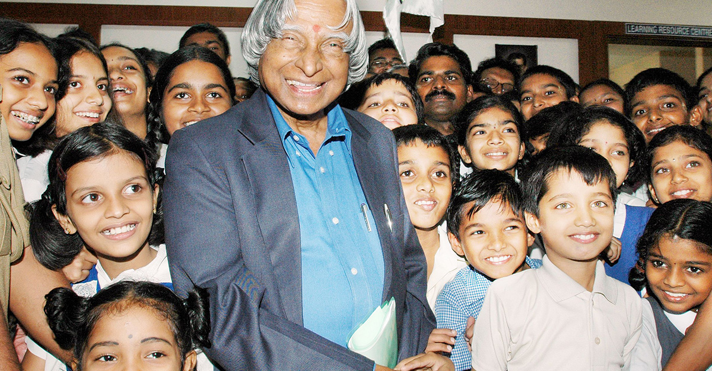

Dr. A.P.J Abdul Kalam
"Missile Man of India , The People`s President"

Kalam sir with Student
Here's a time-line of his Life..
Avul Pakir Jainulabdeen Abdul Kalam was an Indian aerospace scientist and politician .
who served as the 11th president of India from 2002 to 2007. He was born and raised in Ramesharam, Tamilnadu .
He was known as the missile man of India and played a key role. He died on 27.07.2015. 27thJuly 2023 marks
the 8th Memorial Day of the wonderful human being.
- Born: October 15, 1931, in Rameswaram, Tamil Nadu, India
- 1954: Graduated in Physics from St. Joseph's College, Tiruchirappalli.
- 1960 Completed aerospace engineering from Madras Institute of Technology (MIT).
- 1960s: Joined DRDO (Defence Research and Development Organisation).
- 1969: Transferred to ISRO, became Project Director of SLV-III, India’s first satellite launch vehicle.
- 1969:1980: Successfully launched Rohini Satellite into orbit via SLV-III.
- 1998:1998: Key role in Pokhran-II nuclear tests under PM Atal Bihari Vajpayee’s government.
- 2002–2007: Served as the 11th President of India.
- 2008-tillPromoted education, innovation, and youth development.
- Died: July 27, 2015, at age 83, due to cardiac arrest while delivering a lecture at IIM Shillong.
Some Inspiring Quotes DR. A.P.J Abdul Kalam Which I Like Most
- "Dream, dream, dream. Dreams transform into thoughts and thoughts result in action."
- "You have to dream before your dreams can come true."
- "If you want to shine like a sun, first burn like a sun."
- "Don’t take rest after your first victory because if you fail in second,
more lips are waiting to say that your first victory was just luck."
- "Man needs difficulties in life because they are necessary to enjoy the success."
- "Failure will never overtake me if my determination to succeed is strong enough."
- "Thinking should become your capital asset, no matter whatever ups and downs you come across in your life."
- "Let us sacrifice our today so that our children can have a better tomorrow."
- "Let us sacrifice our today so that our children can have a better tomorrow."
- "Excellence is a continuous process and not an accident."
"Look at the sky. We are not alone.
The whole universe is friendly to us and conspires only to give the best to those who dream and work"
Dr. A.P.J Abdul Kalam